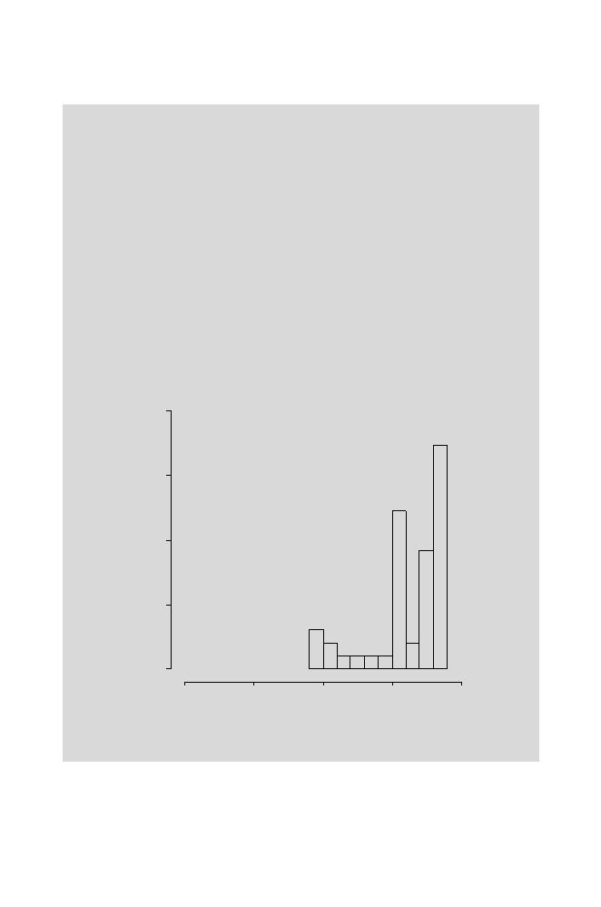

9.2 Representing Signals in DNA: Independent Positions
241
> signif(gata.score,2)
[1]
3.67 6.09 8.42 -0.61 8.42 8.42 8.42 7.29
8.03
8.03
[11]
5.62 0.60 7.29
7.29 5.32 8.42 6.38 8.03
7.29
8.03
[21]
8.42 7.68 4.60
0.59 5.32 5.35 8.42 7.29
2.23
8.03
[31]
5.23 7.68 8.03
5.25 8.03 8.42 5.35 8.03 -0.25 -0.69
[41]
5.99 7.68 7.68
5.61 5.64 5.99 1.43 8.03
5.99
(We use the
signif()
function to limit the output to two significant figures).
We examine the score distribution graphically:
> hist(gata.score,xlim=c(-12,12),ylim=c(0,0.4),
+ nclass=10, prob=T)
The result is shown in Fig. 9.3. The score distribution is very broad and
asymmetric. Notice that some of the GATA-1 sites have scores below 0. What
would you have expected the average score to be for a set of
background
sequences composed of iid letters? We return to this question in the example
after the last section of this chapter. We might wonder whether some of the
GATA-1 sequences in our training set have been misidentified.
Density
gata.score
-10 -5 0 5 10
0.0 0.1 0.2 0.3 0.4
Fig. 9.3.
Histogram of GATA-1 site scores for sites listed in Table 9.3.